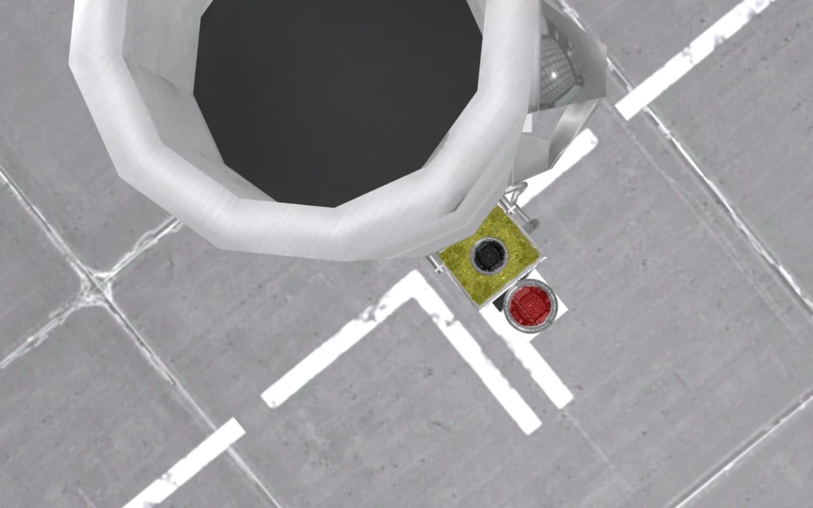
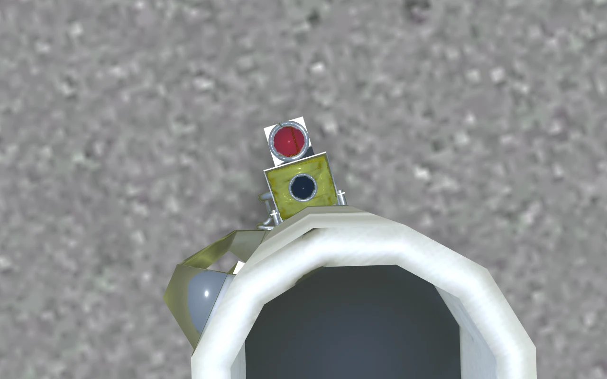
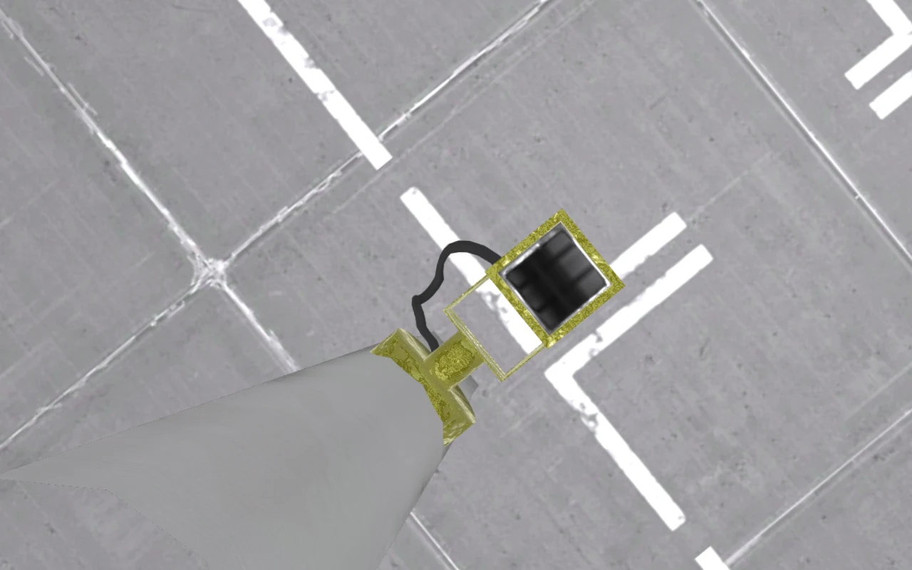
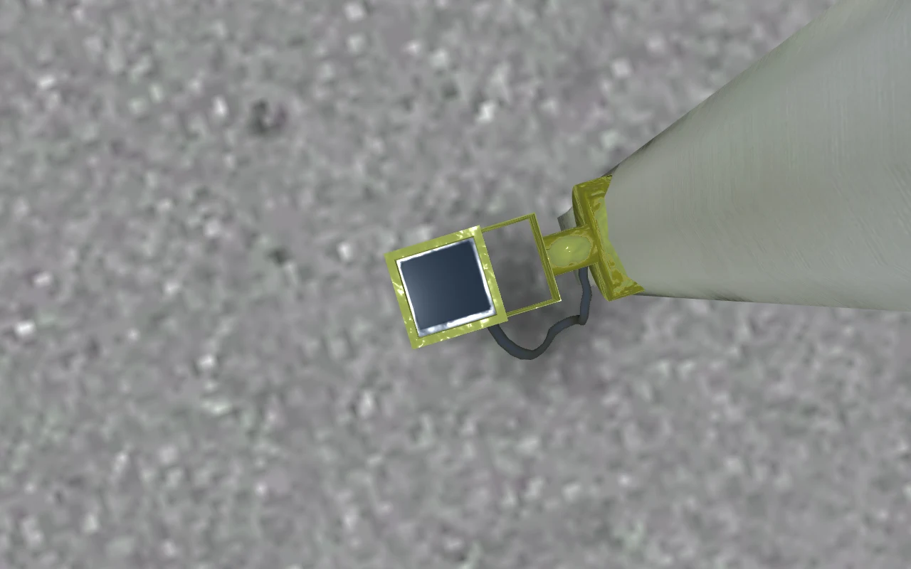

ShineFix home
← Back to supported mods
Canadarm Continued
Optics verified
Human tested
Version 1:1.81
Compatibility evidence
Original screenshot gallery
Parts
Canadarm End Effector


Canadarm Lowerarm

